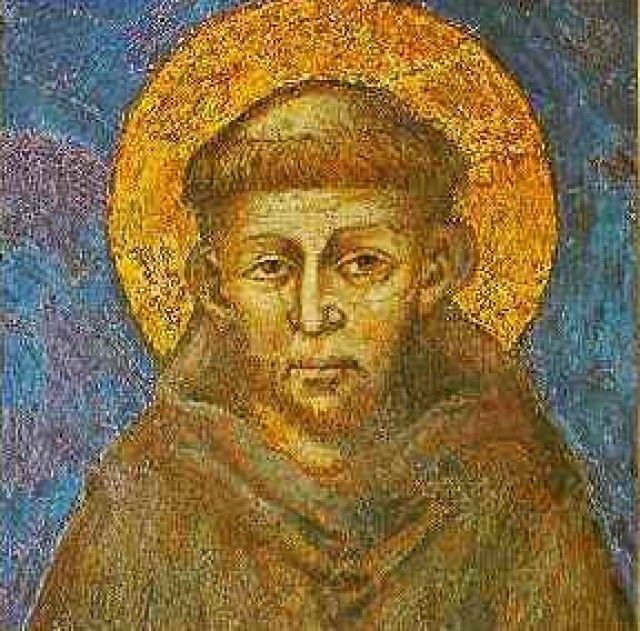
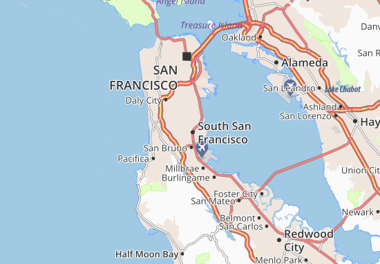
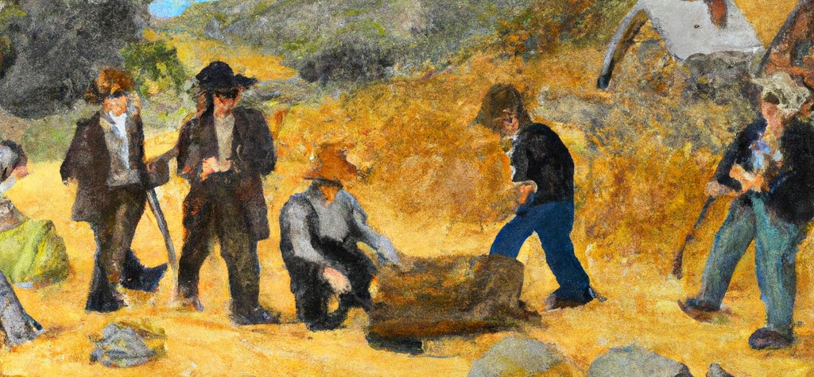

San Francisco
Du port mexicain Yerba Buena à la Silicon Valley, découvrez l'histoire fascinante d'une ville qui a transformé le monde.
cómo fue fundada la ciudad
Origen de la ciudad: presencia española, misión religiosa y cambio de nombre a San Francisco.
- 1767: expulsión de los jesuitas por el rey Carlos III.
- Nombre San Francisco en memoria de San Francisco de Asís.
- 1776: los españoles crean la misión Dolores.
- 1821: California = México → “Yerba Buena”.
- 1846: California = territorio de EE.UU. → 30 de enero = San Francisco.
- 1915: acoge la Exposición Universal de Panamá-Pacífico.
qienes el creator de la ciudad
En realidad, la ciudad no tiene un único "fundador" oficial.
- la creacion de este ciudad :
=> la mission Dolores (1776).
=> el nombre de la ciudad => en memora a Francisco de Asis.

describir la ciudad
San Francisco es una ciudad costera con una estructura urbana muy particular.
- en el ocean pacifico.
- en una peninsula.
- un espacio pequeño => una alta densidad.
- alto riesgo sismico => San Andraas.
- una cuadricula.
=> calles empinadas.
=> escaleras.
- una ciudad con barrios :
-- dowtown = economie.
-- DoMa = technologia.
-- mission District = centro historico.
- cada barrio es como una paquena ciudad.
- Varios tipos de arquitecturas:
=> rascacielos en el distrito financiero
=> casas unifamiliares (casas victorianas (con una imagen))
Citas españolas o visuals culturales.

decrir en que se baso economicamente en el passadeo
La fiebre del oro transformó la economía de San Francisco.

comentar y monstrar como es actualmente esa ciudad
Hoy San Francisco es un gran polo tecnológico, financiero y cultural.
conclusión
En conclusión, San Francisco es una ciudad construida entre el océano Pacífico y las colinas, con una historia muy rica: de la misión Dolores y la fiebre del oro hasta la revolución tecnológica. Hoy combina cultura, diversidad e innovación, pero también enfrenta desafíos como el riesgo sísmico y las desigualdades sociales.
Tu español oral es clave aquí: puedes resumir, comparar y dar tu opinión personal.
⚠️ No hacer clic
No hagas clic en el botón rojo del centro de la pantalla.